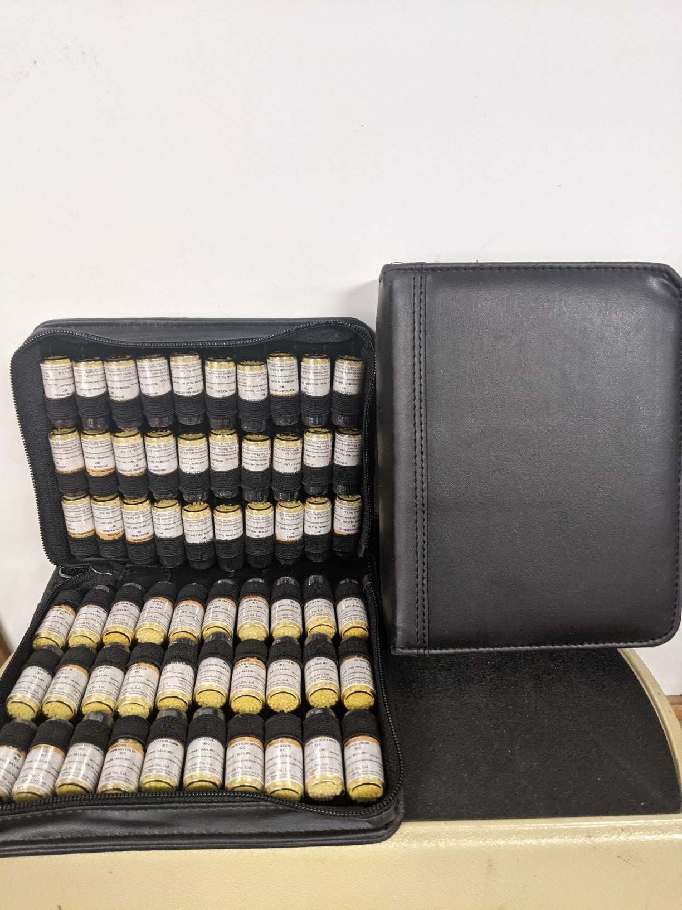
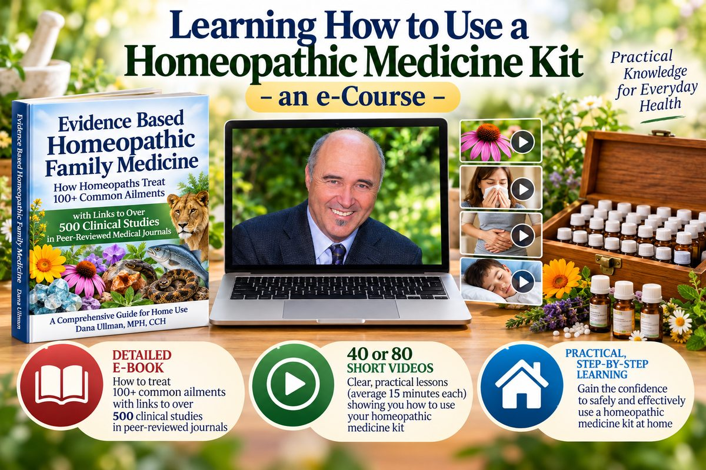
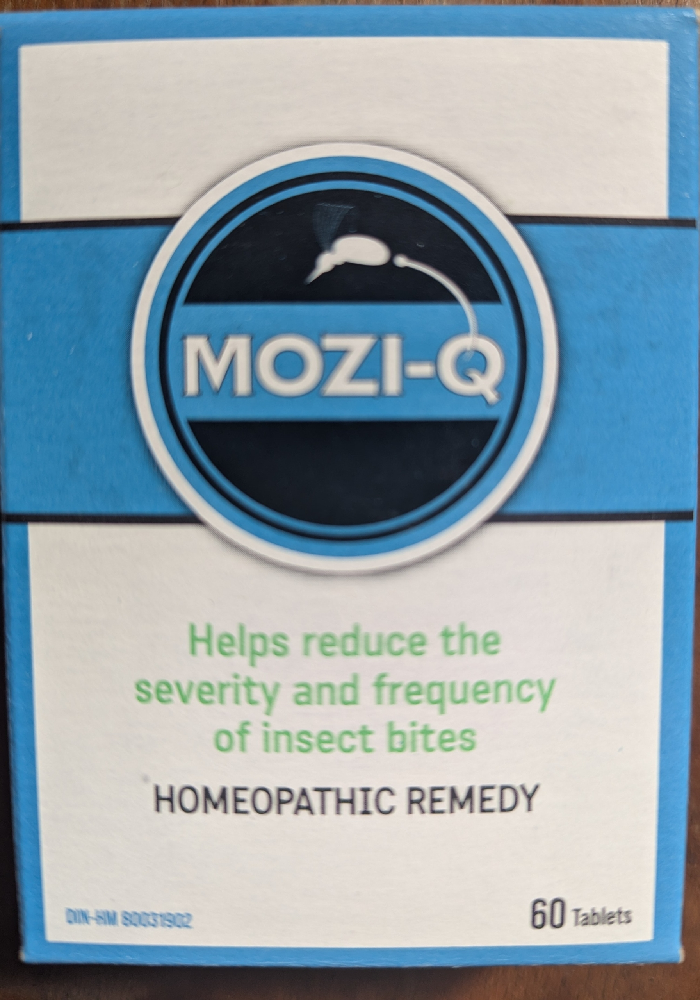
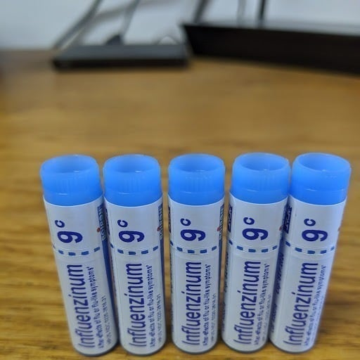
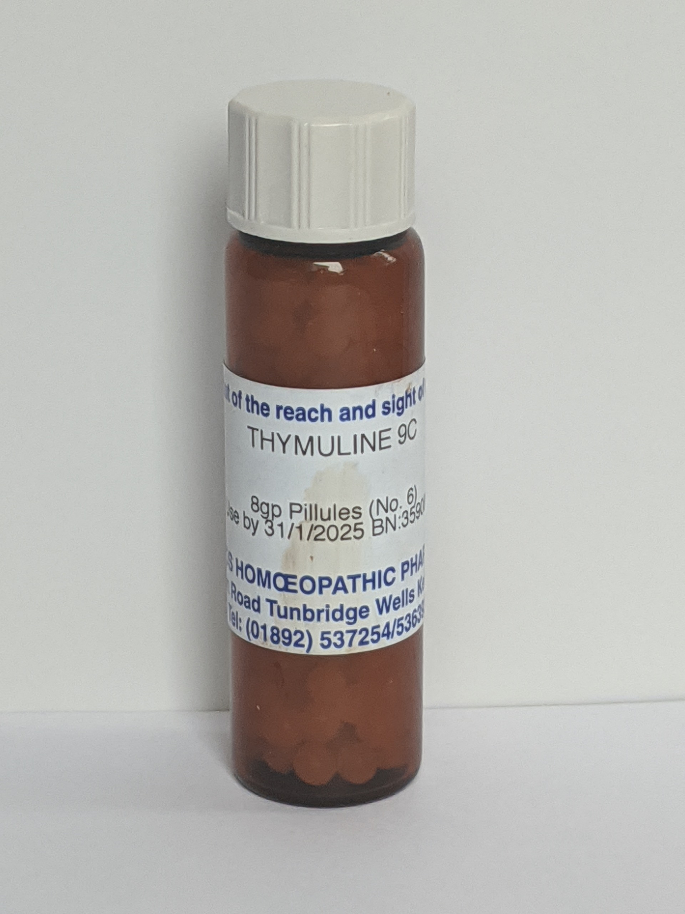

A trusted resource for homeopathic medicines, books & professional care
For fifty years, Homeopathic Educational Services and Dana Ullman, MPH, CCH — a world-renowned leader in homeopathic medicine — have helped people learn about homeopathy, find high-quality resources, and make informed choices about homeopathic care.
 The Homeopathic Revolution
A compelling bookThe Homeopathic RevolutionWhy famous people & cultural heroes choose homeopathy
The Homeopathic Revolution
A compelling bookThe Homeopathic RevolutionWhy famous people & cultural heroes choose homeopathy
 Everybody's Guide to Homeopathic Medicines
BestsellerEverybody's Guide to Homeopathic MedicinesStephen Cummings, MD & Dana Ullman, MPH, CCH
Everybody's Guide to Homeopathic Medicines
BestsellerEverybody's Guide to Homeopathic MedicinesStephen Cummings, MD & Dana Ullman, MPH, CCH
 Homeopathic Medicine for Children and Infants
For parentsHomeopathic Medicine for Children and InfantsBy Dana Ullman, MPH, CCH
Homeopathic Medicine for Children and Infants
For parentsHomeopathic Medicine for Children and InfantsBy Dana Ullman, MPH, CCH
 Discovering Homeopathy
Foreword by HM's PhysicianDiscovering HomeopathyMedicine for the 21st Century
Discovering Homeopathy
Foreword by HM's PhysicianDiscovering HomeopathyMedicine for the 21st Century
Shop Homeopathy
Find the Right Medicine
Shop by condition/symptom or medicine
Open the finder →Learn About Homeopathy
100+ Articles · Research · Videos · Beginner's Guides
Start reading →Consult with Dana Ullman, MPH, CCH
Professional homeopathic consultations via Zoom (or phone)
Information about homeopathic consultations with Dana Ullman, MPH, CCH →Don't know the remedy name? Start here
Shop by Health Concern
Pick what health concern you have, and we'll point you to some possible homeopathic remedies, kits, books, and articles. However, we will not be able to provide guidance for every possible ailment.
For serious, chronic, or worsening symptoms, seek appropriate medical care and consider adjunctive professional homeopathic consultations here (it IS viable to do homeopathic care and conventional medicine).
Bestsellers
Most Popular Homeopathic Medicine Kits
Curated sets of remedies with a printed guide — the fastest way to have homeopathy on hand when you actually need it.
 Family Medicine Kit30C
Family Medicine Kit30C
Family Medicine Kit
The household standard — everyday remedies for fevers, injuries, coughs and upsets, with a guidebook.$219.99 Travel Kit30C
Travel Kit30C
Travel Kit
36 remedies, carry-on friendly: jet lag, motion sickness, traveller's stomach, bites and sunburn.$73.00 Compact Basic Kit30CNEW
Compact Basic Kit30CNEW
Compact Basic Kit
36 essential remedies in a compact case — a simple, affordable way to start.$73.00
60 Remedy Kit — 30C30C60 Remedy Kit — 30C
A full acute-prescribing set in the most widely used potency, in larger 3.5 gram bottles.$189.00 60 Remedy Kit — 200C200C60 Remedy Kit — 200C
The same sixty remedies at a higher potency, for experienced users and practitioners.$205.00
E-course with Dana Ullman, MPH, CCH
Learning How to Use a Homeopathic Medicine Kit
Short, practical video lessons (averaging 15 minutes each) plus a detailed e-book on treating 100+ common ailments, with links to over 500 clinical studies in peer-reviewed journals.
Worth knowing
Special Homeopathic Medicines that YOU should know about!

MOZI-Q Homeopathic Insect Repellent60 tabletsView product →
Influenzinum 9C — Flu Season 2026–2027Homeopathic doses of the 3 most common flu viruses of the seasonView product →
Thymuline 9CMade from a hormone from the thymus gland known to help your body create T-cells.View product → Body Anew Cleanse MultipackOral dropsView product →
Body Anew Cleanse MultipackOral dropsView product →

Meet the founder
A world-renowned leader in homeopathic medicine
Author · Educator · Homeopathic Practitioner
Dana Ullman, MPH, CCH, has been studying, writing about, teaching and practising homeopathy for more than four decades. He founded Homeopathic Educational Services in 1975 as a resource for people seeking reliable books, medicines, education and information about homeopathy.
He has authored ten books on homeopathy and natural medicine, including the bestselling Everybody's Guide to Homeopathic Medicines (with Stephen Cummings, MD), Homeopathic Medicines for Children and Infants, The Homeopathic Revolution: Why Famous People and Cultural Heroes Choose Homeopathy, and Discovering Homeopathy — the last two containing a Foreword by the late Physician to Her Majesty Queen Elizabeth II.
He has taught homeopathy to medical and pharmacy students, and has written chapters on homeopathic medicine for four medical textbooks — two of them published by Oxford University Press.
Books authored
On homeopathy and natural medicine, including the bestselling Everybody's Guide to Homeopathic Medicines.
2 Forewords by the Physician to HM Queen Elizabeth II
The Homeopathic Revolution and Discovering Homeopathy both carry a Foreword by Her Majesty's late Physician.
Medical textbook chapters
Two published by Oxford University Press — homeopathy written for a medical readership.
Taught medical & pharmacy students
Four decades of teaching homeopathy to clinicians, pharmacists and the public.
Professional homeopathic care
Every patient is seen by Zoom — or by telephone
Dana sees all of his patients remotely. That means people anywhere in the world can receive his homeopathic care, without travelling to Berkeley.
Veterinary & agricultural
Special Homeopathic Books for Making Animals and even Plants HEALTHIER!


Body & mind
Do YOU know about the many homeopathic “body-mind” personality types?


New to Homeopathy? Start here
Frequently Asked Questions
The questions everyone asks first — answered in plain language, with a link to the full guide.
 Dilution & potency
Dilution & potency
Reading a label
Arnica montana 30C — the medicine name in Latin, then its potency. Higher numbers are more dilute, not larger doses. Most home use starts at 30C.
For the curious and the sceptical alike
Explore the Evidence for Homeopathy
Three ways in — the clinical trials, the science of ultra-dilution, and two centuries of practice.
 Clinical researchTrials · Meta-analyses
Clinical researchTrials · Meta-analyses
Clinical Research
Randomised trials, systematic reviews and the outcome studies most often cited — with links to the primary papers.
Read the research → Ultra-dilutionNanodoses · Solution chemistry
Ultra-dilutionNanodoses · Solution chemistry
How Homeopathy May Work
What current research on nanodoses and the structure of water suggests about ultra-diluted medicines.
See the science → History1796 to today
History1796 to today
History of Homeopathy
From Samuel Hahnemann to the physicians, cultural heroes and royal households who have chosen homeopathy.
Read the history →Over 100 free articles by Dana Ullman
Read, free, right now
 Guide
GuideTen Most Frequently Asked Questions on Homeopathic Medicine
 Research
ResearchCompelling Facts, Figures, and Scientific Studies about Homeopathic Medicine
 Philosophy
PhilosophyWhy Homeopathy Makes Sense and Works
 History
HistoryNobel Prize-Winners Who Advocated for Homeopathic Medicine
 Family
FamilyHomeopathic Pediatrics – Safer, Saner Medicines for Our Children
 History
HistoryThe History of Homeopathy in Epidemics
Follow Dana Ullman
Your Purchase Helps Grow Homeopathy
When you shop with Homeopathic Educational Services, your purchase helps support the educational and advocacy work of our founder, Dana Ullman, MPH, CCH. Explore his books, articles, and other contributions to homeopathy.
Homeopathy in your feed, every month
Research, remedies and answers to real questions — on Facebook, Instagram and LinkedIn, plus the Substack blog, videos and Twitter/X.
Free e-newsletter
Subscribe to our free homeopathy e-newsletter & get special offers
Dana's newsletter reaches readers in more than 60 countries.
- New articles and research summaries
- Subscriber-only discounts on books, kits and e-courses
- Seasonal remedy guides — flu, allergy and travel
Join the list
You're on the list!
Thank you — watch your inbox for Dana's next newsletter and subscriber-only offers.
Looking for something specific?
Search 1,000+ medicines, books, medicine kits, e-courses and free articles.